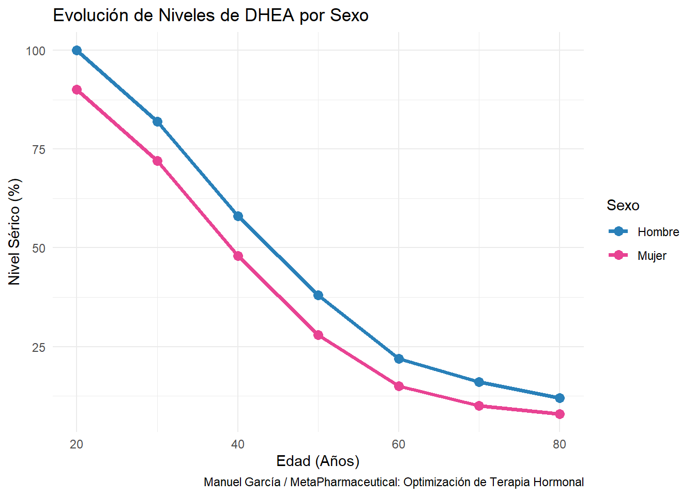

Capítulo 3 Terapia Hormonal en la Mujer II:
3.1 Atrofia Vulvovaginal, Estriol, DHEA y terapias tópicas.
3.1.1 Atrofia Vulvovaginal (AVV) y Síndrome Genitourinario de la Menopausia (GSM).
La atrofia vulvovaginal (AVV) se entiende como el conjunto de cambios fisiológicos y síntomas derivados del declive de los niveles de estrógenos sobre el epitelio vaginal y la uretra, tejidos que poseen una alta densidad de receptores para estas hormonas.
Esta condición incluye los siguientes aspectos fundamentales:
• Cambios Fisiológicos: La deficiencia hormonal provoca un adelgazamiento de las paredes de la vagina (pérdida de grosor del epitelio), así como una reducción significativa en la elasticidad y la humedad natural de los tejidos urogenitales.
• Sintomatología Clínica: Se manifiesta principalmente a través de resequedad vaginal, prurito (picazón), irritación y dispareunia (dolor o molestias durante el acto sexual).
• Alcance Urogenital: El término a menudo se expande a “atrofia urogenital” porque no solo afecta a la vagina, sino también al tracto urinario inferior, lo que puede derivar en síntomas como frecuencia urinaria, infecciones recurrentes y debilidad en los músculos que rodean la uretra (asociada a la incontinencia).
• Contexto Hormonal: Es una manifestación característica de la menopausia y la perimenopausia, periodos donde la función ovárica disminuye y cesa, privando a estos tejidos del estímulo trófico del estradiol.
En esencia, la atrofia vulvovaginal es una condición degenerativa de los tejidos del tracto urogenital que ocurre por la falta de reposición fisiológica de hormonas, comprometiendo la integridad tisular, la lubricación y la calidad de vida de la mujer.
3.1.2 Estriol (E3): El Estándar de oro en la regeneración local vaginal.
El estriol se distingue como la variante más suave y, por consiguiente, la más segura de los estrógenos, debido a que no induce transformaciones cancerígenas en las células. Su perfil de seguridad es tan elevado que se ha utilizado incluso en el manejo del cáncer de mama, operando bajo un mecanismo de bloqueo donde ocupa los receptores hormonales e impide que los estrógenos más potentes y agresivos causen daño (Holmgren, G., et al. (2004). “Estriol and the risk of breast cancer: a definition of the problem”). Además de su papel protector, el estriol es la opción clínica de mayor efectividad para revertir la resequedad vaginal y restaurar la salud del tejido urogenital.
En cuanto a la forma de administración, los estrógenos aplicados por vía transdérmica —incluido el estradiol— son fundamentalmente más seguros que las presentaciones orales, ya que esta ruta evita el metabolismo de primer paso por el hígado y reduce riesgos vasculares. Sin embargo, es una norma inquebrantable que estas hormonas nunca deben administrarse sin el uso concomitante de progesterona en crema (esencial para equilibrar al estrógeno, proteger los tejidos sensibles y prevenir efectos secundarios no deseados).
Es de vital importancia destacar que existe una influencia directa de los estrógenos sobre el metabolismo lipídico y el balance energético debido a:
1. Acción sobre el tejido adiposo.
Los estrógenos actúan sobre los receptores estrogénicos (\(\text{ER}\alpha\) y \(\text{ER}\beta\)) presentes en los adipocitos. Su naturaleza lipogénica se manifiesta principalmente en:
Diferenciación celular: Estimulan la formación de nuevos adipocitos en depósitos subcutáneos específicos.
Actividad Enzimática: Aumentan la actividad de la lipoproteína lipasa (LPL) en la zona glúteo-femoral, facilitando la entrada de ácidos grasos a la célula para su almacenamiento.
2. El binomio estrógeno-insulina.
Existe una estrecha relación entre los niveles de estrógenos y la sensibilidad a la insulina. Cuando los niveles de estrógenos son óptimos y estables (como se busca en la TRH personalizada), ayudan a la sensibilidad insulínica. Es importante recalcar su “capacidad intrínseca de generar grasa” para advertir sobre la dominancia estrogénica: un exceso de estrógenos sin el contrapunto de la progesterona puede derivar en un aumento de la resistencia a la insulina y, por ende, en una mayor acumulación de grasa abdominal y visceral.
3. Implicación clínica en la menopausia.
Paradójicamente, durante la menopausia, la caída de estrógenos provoca un cambio en la distribución de la grasa (pasando de ginoide a androide/abdominal). Al iniciar una TRH-P, el médico debe recordar esta naturaleza lipogénica para ajustar la dosis de manera que se recupere la protección cardiovascular y ósea sin inducir un aumento de peso no deseado y comprender que la hormona siempre buscará restaurar los depósitos de reserva biológica del organismo.
3.1.3 DHEA (Dehidroepiandrosterona): El Marcador hormonal de la longevidad y el bienestar.
La DHEA es catalogada como la “madre de todas las hormonas” y es el esteroide más abundante en el organismo humano. Producida principalmente por las glándulas suprarrenales, pero también por los testículos, ovarios, cerebro y la piel. Actúa como un precursor fundamental (aproximadamente el 40% de nuestro estrógeno y testosterona se deriva de su conversión).
1. El barómetro biológico de la edad.
La DHEA es considerada el marcador biológico de la edad por excelencia debido a su patrón de declive único. Sus niveles alcanzan el punto máximo alrededor de los 20 años; a los 40 años se produce solo el 50%, y entre los 60 y 80 años los niveles caen a un 10-20% de su valor pico. Se asocia el mantenimiento de niveles óptimos con una mayor longevidad y la prevención de manifestaciones degenerativas del envejecimiento.

2. Beneficios sistémicos y metabólicos.
Los beneficios sistémicos y metabólicos de la DHEA se fundamentan en su papel como la “hormona madre” o precursor esteroideo más abundante del organismo. Al ser la base química para la síntesis de aproximadamente el 40% de los estrógenos y la testosterona, su impacto no se limita a un solo órgano, sino que orquesta el equilibrio funcional de múltiples sistemas que declinan con la edad. Los ejes principales de acción sistémica y metabólica son los siguientes:
• Gestión del peso y energía: Es conocida como una hormona “quemadora de grasa”. Ayuda a reducir la grasa abdominal al mejorar la sensibilidad a la insulina y estabilizar el azúcar en la sangre.
• Salud cardiovascular: Fortalece el músculo cardíaco, ayuda a prevenir la formación de coágulos y evita que el colesterol LDL (“malo”) se oxide, protegiendo las arterias coronarias.
• Protección ósea: Estimula el crecimiento óseo tanto en la membrana interna como externa, siendo clave en la prevención y reversión de la osteoporosis.
3. Salud cerebral y cognitiva.
Esta hormona no solo actúa como un componente sistémico, sino que se posiciona como un neuroesteroide clave capaz de modular la química cerebral y revertir el deterioro cognitivo mediante los siguientes ejes de acción:
• Protección contra la neurotoxicidad del cortisol: Una de sus funciones más críticas es proteger al cerebro y al sistema nervioso de los efectos dañinos del exceso de cortisol (la hormona del estrés). Esta acción es fundamental para prevenir el deterioro cognitivo y formas de demencia asociadas al estrés crónico.
• Mejora de la memoria y la agudeza mental: Se ha demostrado que la DHEA estimula la memoria a corto y largo plazo, mejora la capacidad de concentración y combate la “niebla cerebral”. En estudios comparativos, se ha identificado como uno de los estimulantes de la memoria más potentes después de la pregnenolona.
• Prevención de enfermedades neurodegenerativas: Mantener niveles óptimos de DHEA se asocia con una menor incidencia de padecimientos como el Parkinson y el Alzheimer. Además, ayuda a proteger el tejido cerebral de daños derivados de accidentes cerebrovasculares.
• Bienestar psicológico y manejo del estrés: Su uso clínico se vincula con un aumento notable en el bienestar psicológico, disminuyendo la depresión y mejorando el estado de ánimo y la capacidad para manejar situaciones tensas. Por el contrario, su deficiencia suele manifestarse como irritabilidad, intolerancia al ruido y una sensación constante de estar abrumado.
En conclusión, la DHEA no solo optimiza el rendimiento del cuerpo, sino que es esencial para mantener un pensamiento lúcido, una memoria robusta y un estado emocional equilibrado a medida que envejecemos.
4. Función inmunológica y bienestar.
Complementando su rol como guardián de la mente, la DHEA actúa como el pilar fundamental de la resiliencia biológica, fortaleciendo nuestras defensas naturales y restaurando la vitalidad emocional a través de los siguientes mecanismos:
• Estimulación del sistema inmunológico: La DHEA potencia la producción de anticuerpos (específicamente inmunoglobulinas G) y activa las células asesinas naturales e interleucina-2, herramientas críticas para que el cuerpo combata con éxito infecciones virales, bacterianas y parasitarias.
• Soporte en enfermedades autoinmunes: Su administración ha demostrado una mejoría clínica notable en padecimientos como el lupus, la colitis ulcerativa y la artritis reumatoide, ayudando al organismo a mitigar respuestas inmunes desequilibradas.
• Prevención oncológica y longevidad: Niveles óptimos de esta hormona actúan como un factor protector frente a diversos tipos de cáncer (como el de mama, próstata, colon e hígado), consolidando su reputación como el marcador biológico de la edad; quienes mantienen niveles altos tienden a gozar de una mayor longevidad.
• Protección Cardiovascular: La DHEA fortalece el músculo cardíaco y previene la oxidación del colesterol LDL (“malo”), un proceso clave para evitar la formación de placas y coágulos en las arterias coronarias.
• Restauración del descanso y la energía vital: La terapia con DHEA mejora significativamente la calidad del sueño y es una herramienta eficaz contra el síndrome de fatiga crónica, devolviendo al individuo el vigor y la motivación perdidos con el envejecimiento
• Salud sexual: La DHEA actúa como la “hormona madre” o precursor fundamental que el organismo convierte en estrógeno y testosterona según sus necesidades, lo que permite restaurar el deseo sexual (libido) en ambos sexos, mejorar la potencia eréctil en hombres y aumentar la sensibilidad de los tejidos urogenitales y la producción de feromonas; resultando en una revitalización integral de la vida íntima que se ve afectada por el envejecimiento y el agotamiento adrenal provocado por el estrés crónico.
5. Administración y dosificación.
La DHEA es versátil en su aplicación, aunque existen restricciones técnicas importantes:
• Vía Oral: Disponible en cápsulas. Se recomienda preferiblemente en fórmulas de liberación sostenida para mantener niveles estables.
• Vía Transdérmica: Se aplica en forma de cremas o geles sobre la piel delgada (como la cara interna de los brazos o muñecas) para evitar el metabolismo de primer paso por el hígado.
• Vía Vaginal: Se utiliza principalmente en mujeres para regenerar el epitelio vaginal y tratar la atrofia urogenital, en forma de cremas o supositorios
• Dosis Típicas para administar DHEA:
| Grupo / Vía | Objetivo Sérico | Dosis General | Ajuste por Nivel Bajo |
|---|---|---|---|
| Mujeres (Sistémico) | ~ 250 mcg/dl | 5 – 30 mg/día | <30 mcg/dl: 25mg; ~100 mcg/dl: 12.5mg |
| Mujeres (Vaginal) | Acción Local | 2 – 6 mg/día | Para resequedad y lubricación |
| Hombres (Sistémico) | 400 – 500 mcg/dl | 25 – 50 mg/día | <100 mcg/dl: 50mg; >100 mcg/dl: 25mg |
Momento de aplicación: Se recomienda consistentemente administrar o tomar la DHEA antes de acostarse, ya que mejora la calidad del sueño y apoya los procesos reparadores nocturnos.
6. Seguridad y Monitoreo Especial.
• Análisis clínico: El examen de laboratorio adecuado debe medir DHEA-S (Sulfato de DHEA) debido a que esta presenta una estabilidad metabólica significativamente superior en comparación con la hormona base. Mientras que la DHEA simple posee una vida media muy corta y está sujeta a marcadas fluctuaciones durante el día, la DHEA-S se mantiene en concentraciones séricas constantes y mucho más elevadas al no presentar variaciones circadianas importantes. Esto permite que la toma de muestras sea más flexible y que los resultados reflejen con mayor fidelidad la reserva funcional de la glándula suprarrenal, evitando interpretaciones erróneas que podrían derivarse de los picos y valles hormonales que ocurren tras la administración de una dosis o por el ritmo biológico natural del paciente.
3.1.4 Estrategias de Formulación Magistral.
La elección de la vía de administración es el factor farmacocinético más crítico en la Terapia Hormonal Personalizada (THP), ya que determina cómo se absorben las hormonas y qué riesgos se evitan.Las vías transdérmica y vaginal son fundamentales para maximizar la biodisponibilidad y garantizar la seguridad del paciente. A continuación, se detallan los aspectos clave de estas terapias:
- La vía transdérmica: Eficacia sistémica y seguridad.
La administración a través de la piel permite que las hormonas lleguen directamente al torrente sanguíneo, evitando el “primer paso hepático”.
• Zonas de aplicación (Reglas de Oro): Para asegurar una absorción óptima, las cremas deben aplicarse en áreas de piel delgada y bien vascularizada, como la cara interna de los antebrazos, las muñecas o la parte alta del pecho.
• Áreas a evitar: Es crucial evitar zonas con tejido adiposo (como el abdomen o los muslos), ya que la grasa puede “atrapar” las hormonas, impidiendo que lleguen a la circulación sistémica y alterando el equilibrio deseado.
2. La vía vaginal: Acción Local y soporte urogenital.
Esta vía es la preferida cuando se busca tratar síntomas específicos del tracto urogenital, minimizando la carga hormonal en el resto del cuerpo.
• Estriol (E3) para la atrofia: Debido a su escasa absorción sistémica, el estriol aplicado vaginalmente es la opción más segura para restaurar la humedad y elasticidad de la mucosa sin estimular otros tejidos.
• Testosterona para la incontinencia: La inserción vaginal de crema de testosterona (habitualmente al 2%) es el tratamiento de elección para fortalecer los músculos que rodean la uretra, permitiendo corregir la incontinencia urinaria en pocos días.
3. Tecnología de Vehículos:
La eficacia de una terapia tópica depende no solo de la hormona, sino del vehículo (base) que la transporta.
• Matrices Fosfolipídicas: Se recomienda el uso de bases avanzadas, que utiliza tecnología de bicapa laminar y micropartículas nanosómicas.
• Liberación Controlada: Estos vehículos han demostrado científicamente facilitar la liberación transdérmica controlada de los esteroides, asegurando que la dosis prescrita sea realmente absorbida y no se quede en la superficie de la piel.
4. Protocolo de Seguridad en la Aplicación.
Para garantizar que estas terapias funcionen correctamente, se deben seguir pautas estrictas:
• Oposición con Progesterona: Ningún estrógeno (estradiol o estriol) debe usarse de forma aislada; siempre deben estar equilibrados con progesterona para proteger tejidos sensibles como la mama y el endometrio.
• Rotación de sitios: Es recomendable alternar el lugar de aplicación cada día para evitar la saturación de los receptores locales en la piel.
• Prevención de transferencia: Después de aplicar hormonas transdérmicas, se debe evitar el contacto de la zona con otras personas (pareja o niños) para prevenir la absorción accidental. Este enfoque tópico permite una reposición fisiológica precisa, imitando los niveles naturales del cuerpo y minimizando los efectos secundarios asociados a las hormonas sintéticas u orales.